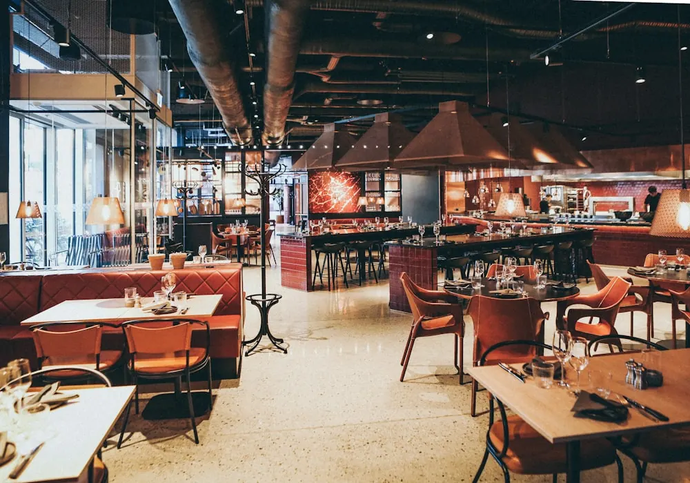
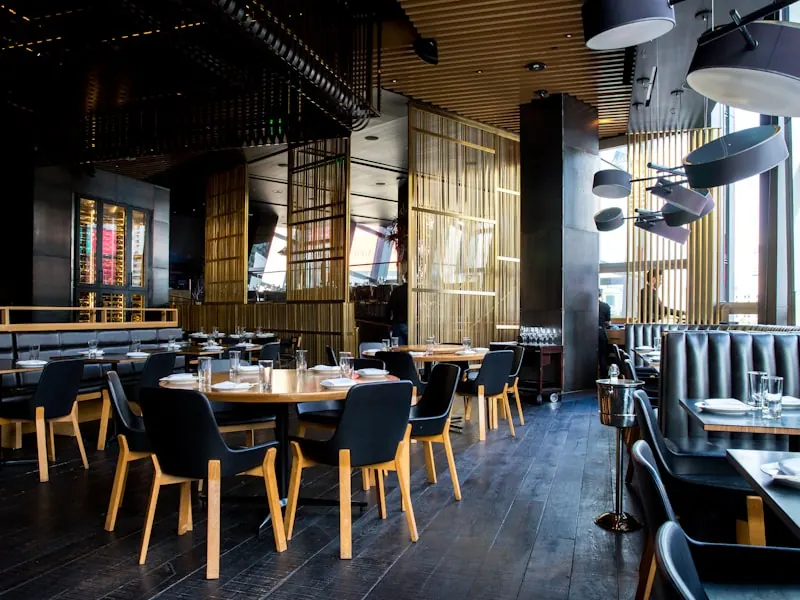
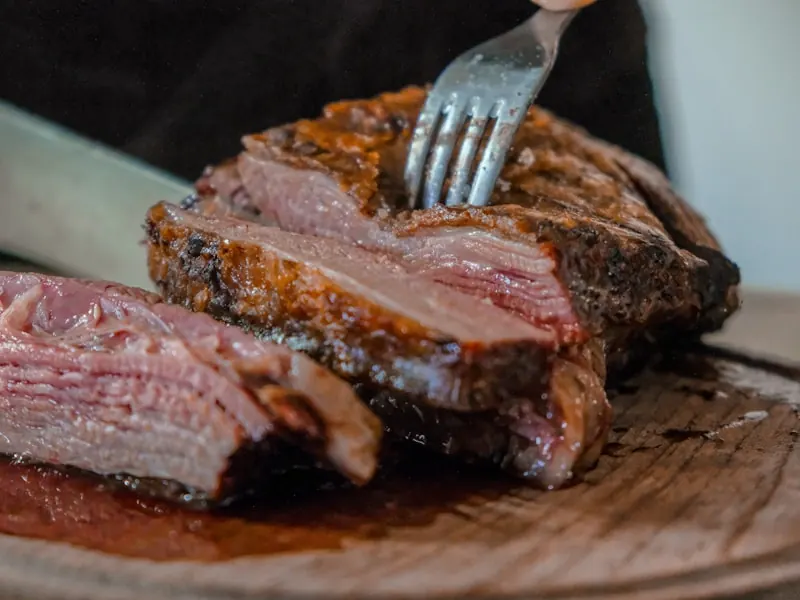
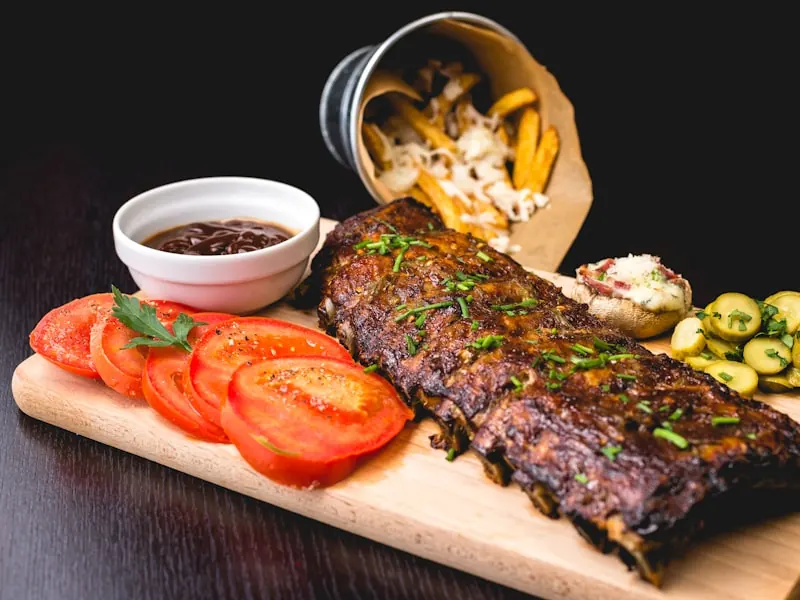
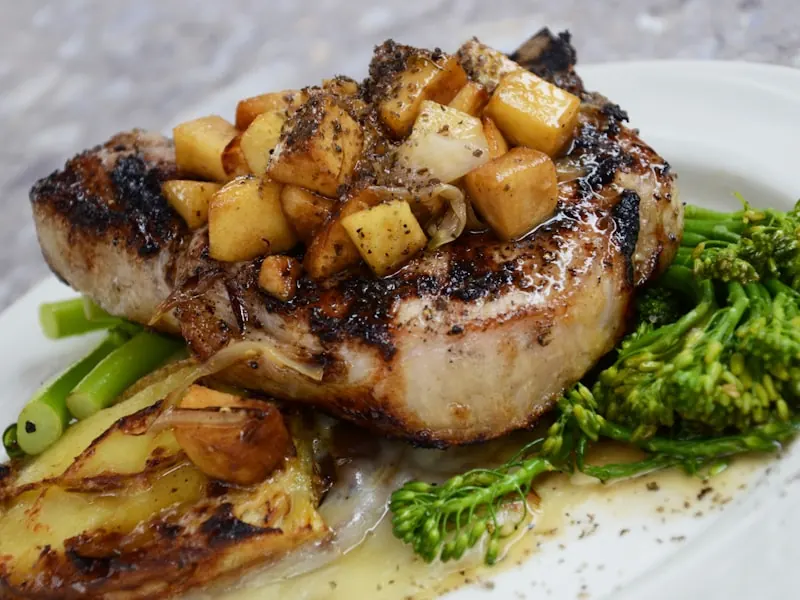
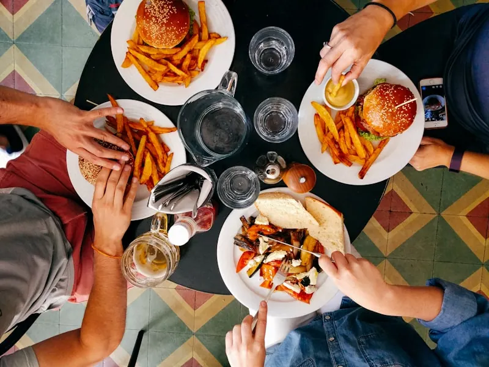
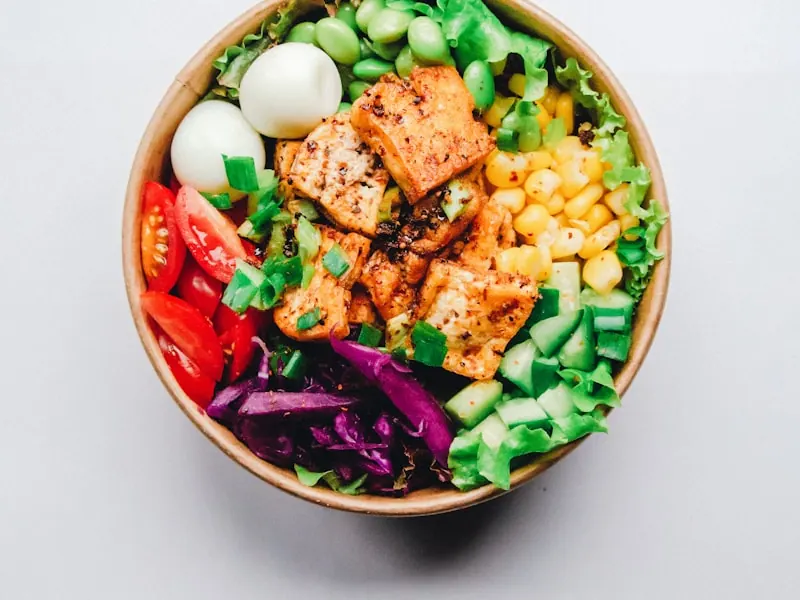
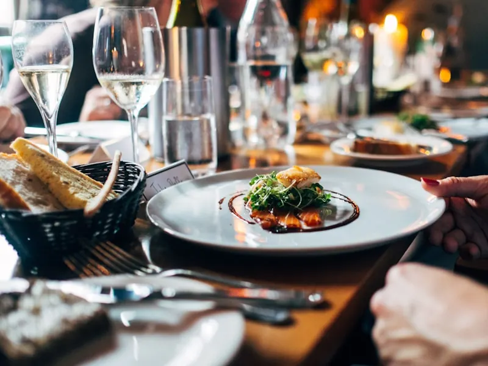

Provoleta al horno de barro
$8.90Provolone gratinado con orégano fresco, aceite de oliva y pan de campo tostado.
Cortes de res madurados 21 días, costillar que pasa cuatro horas sobre brasa de algarrobo y una carta de vinos que armamos plato por plato. Dieciocho años en la misma esquina de Urdesa.
Martes a domingo · Av. Víctor Emilio Estrada 812 y Guayacanes · Estacionamiento con valet desde las 19:00


Don Aníbal Sarmiento llegó a Guayaquil desde Mendoza en 2005 y abrió este local dos años después, con seis mesas y una parrilla que le prestó un vecino. Hoy la cocina la lleva su hija Renata, pero el chimichurri sigue siendo la receta que él trajo escrita a mano.
Compramos la carne a tres ganaderías de la cuenca del Guayas, maduramos en cámara propia y encendemos el carbón a las 10:30 de la mañana. Nada de eso cambió en dieciocho años, y no tenemos intención de cambiarlo.
«Si la brasa está apurada, se nota en el plato. Preferimos que el cliente espere veinte minutos más y se vaya hablando del costillar.» Renata Sarmiento · Jefa de parrilla
Cambiamos las guarniciones según la temporada. Los cortes y el chimichurri no se tocan. Precios en dólares, IVA incluido.
Carta de vinos con 42 etiquetas argentinas, chilenas y ecuatorianas · Copa desde $6.50 · Descorche $12.00
Fotos del salón, la terraza y los cortes tal como salen de la parrilla.







«Reservamos el costillar con dos días de anticipación para el cumpleaños de mi papá y lo trajeron entero a la mesa. Éramos nueve y nadie habló de otra cosa en toda la semana.»
«Llevo clientes de la oficina desde hace años. El ojo de bife siempre sale igual de bueno y el mesero se acuerda de cómo lo pido. Eso ya no se consigue.»
«La provoleta y las mollejas valen el viaje solas. Un viernes sin reserva esperamos 25 minutos en la barra, así que llamen antes. Vale la pena igual.»
Aceptamos reservas hasta con 30 días de anticipación. Para grupos de más de ocho personas pedimos confirmar por WhatsApp.
| Martes a jueves | 12:30 – 15:30 · 19:00 – 23:00 |
|---|---|
| Viernes | 12:30 – 15:30 · 19:00 – 00:00 |
| Sábado | 12:30 – 00:00 |
| Domingo | 12:30 – 17:00 |
| Lunes | Cerrado |
Respondemos por WhatsApp entre las 10:00 y las 22:00. Si es para hoy, escribinos con el número de personas y la hora aproximada.